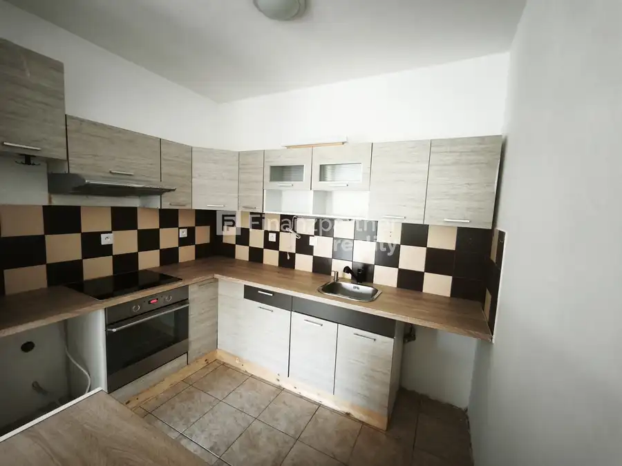
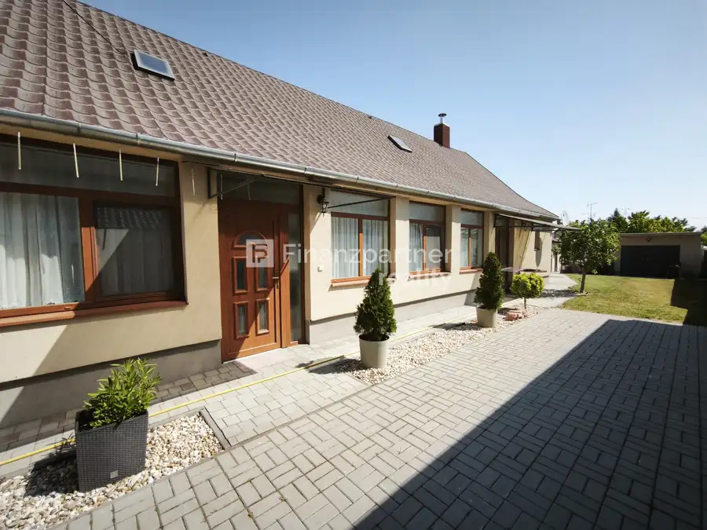
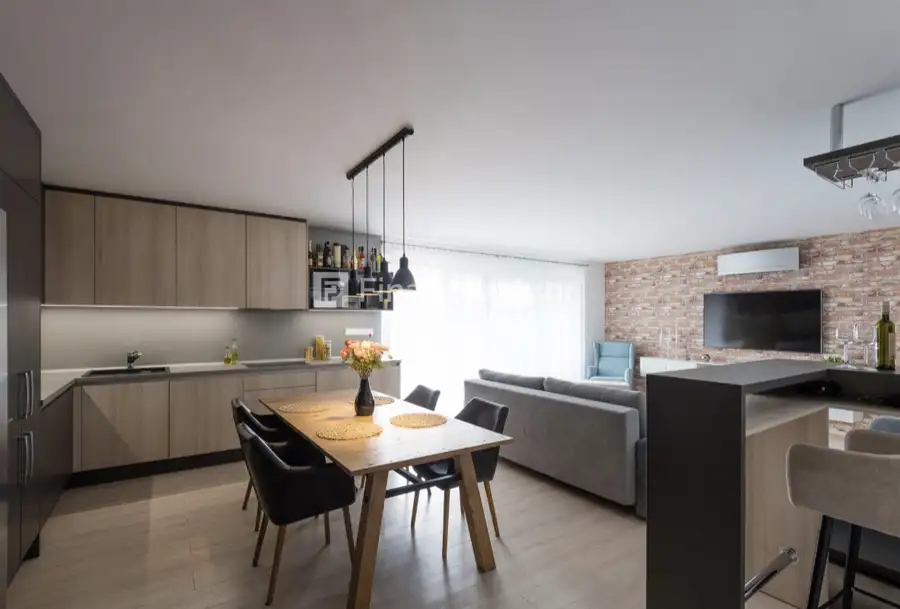

F133-012- KIS- Na predaj 4 izbová novostavba - V. Dvorníky
Veľké Dvorníky
- Plocha120 m²
- StavNovostavba
- VlastníctvoOsobné
- Energetická triedaA
O nehnuteľnosti
Finanzpartner realitná kancelária vám ponúka na predaj priestranný 4 izbový rodinný dom v obci Veľké Dvorníky. Nehnuteľnosť stojí na pozemku s výmerou 809 m2 a poskytuje podlahovú plochu 120 m2. Rodinný dom má priestrannú vstupnú halu. Prvá časť domu má dve priestranné detské izby a hlavnú spálňu s vlastnou kúpeľňou a šatníkom pre súkromie a konfort. Na druhej strane sa nachádza druhá kúpeľňa so sprchovacím kúuom, toaletou, vaňou. Nachádza na tejto strane aj sklad, vstup do pivnice s rozlohou približne 60 m2 a prístup na povalu s rozlohou približne 40 m2, ktorý je idealny ako další úložný priestor. Súčasťou domu je aj garáž s výmerou 20 m2 .Zadná časť nehnuteľnosti je krásna, svetlá, nachádza tu veľká obývacia izba spojená s kuchyňou a jedálenskou časťou odtiaľ vedie priamy vstup na terasu s výmerou 24m2. Nehnuteľnosť je napojená na všetky IS - elektrina, plyn, voda, kanalizácia.Nehnuteľnosť zaručuje konfortné bývanie pre rodinu. Dom má plastové okná, vchodné bezp.dvere, výhoda je aj predpripravená inštalácia pre alarm, pre kamerový systém a pre elektrické žalúzie, pre ešte konfortnejšie a moderné bývanie.Dom sa nachádza vo vyhľadávanej dedine Veľké Dvorníky, iba 2 km od mesta Dunajská Streda. Obec Veľké Dvorníky ponúka kompletnú občiansku vybavenosť.Rodinný dom sa predáva ako štandard bez kuchynskej linky.Cena nehnuteľnosti je 279.500 euro.Naše ceny sú vrátane provízie za kompletný servis a sú schválené majiteľom.Ak vás táto ponuka oslovila, alebo máte nejaké otázky, neváhajte ma kontaktovať, rada si to s Vami osobne prídem pozrieť!Telefón: 0917741588E-mail:kitti.sooky@finanzpartner.sk
Parametre
| Druh | Rodinný dom |
|---|---|
| Dátum zverejnenia | 6. 7. 2026 |
| Energetický certifikát budovy | A |
| Plocha pozemku | 809 m² |
| Plocha terasy v m2 | 24 m² |
| Počet izieb / miestností | 4 |
| Stav nehnuteľnosti | Novostavba |
| Typ | Predaj |
| Typ konštrukcie | Tehlová |
| Vlastníctvo | Osobné |
| Vybavenie | Terasa, Garáž, Pivnica |
| Vykurovanie | Lokálne |
| Zastavaná plocha | 145 m² |
| Úžitková plocha | 120 m² |
Kde to je


Mohlo by Vás zaujímať

BytNové10 135 000 €(F134- 212- KISO) - Na predaj 2 izbový byt v meste DS Dunajská Streda 2-izbový53 m²2. podlažie (F134 - 212 - KISO)Ponúkame Vám na predaj nezariadený 2 izbový byt v meste Dunajská Streda, na druhom poschodí z 5 s výťahom. Hľadáte štartovacie…
DomNové10 225 500 €(F137-12-KISOA) Na predaj RD v Dolnom Stály Dolný Štál (F137-12-KISOA) Ponúkame pre vás v Dolnom Stály krásne obnovený 4-izbový rodinný dom v kludnej čsti dediny. Podlahová plocha RD je 120 m2 postavený z…
BytNové 120 000 €F012 - 113- KISO 3 izbový byt v D.S. Dunajská Streda 3-izbový F012 - 113 - KISOHľadám na kúpu, pre hotovostného klienta 3 izbový byt v Dunajskej Strede, byt by mal byť nový alebo obnovený, zariadený a v osobnom…